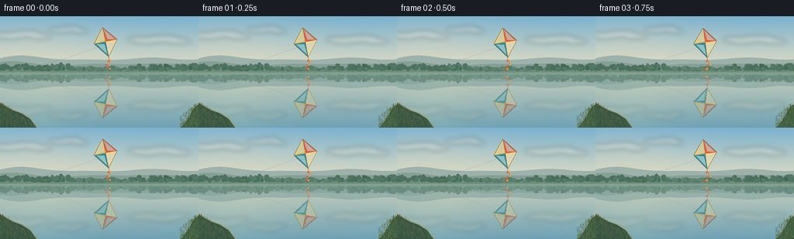
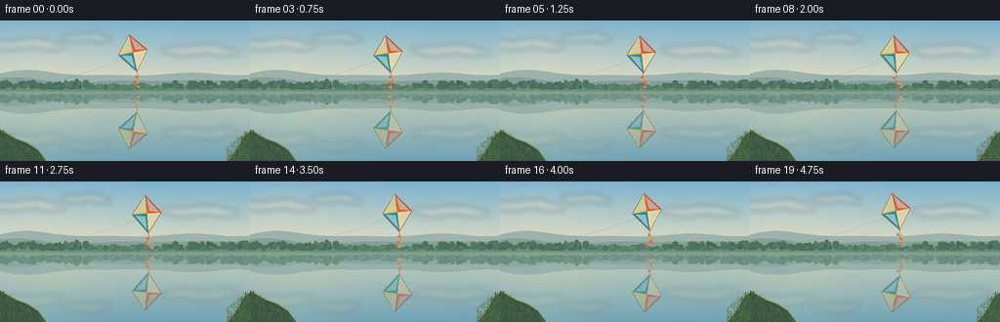

CODING AGENTS AS PIXEL WORLD MODELS
traex/GPT-6.1-Sol · phygen_057
点击播放 · 原生 RGB 像素
逐轮保存的候选
回放视频、检查图与代码变化。
每份候选均可单独播放。实际图片检查记录在下方工具轨迹中。
候选 01播放与检查图
点击播放 · 原生 RGB 像素


展开代码变化
--- 上一保存版本
+++ 本次保存版本
@@ -0,0 +1,168 @@
+from pathlib import Path
+import math, json
+import numpy as np
+from PIL import Image, ImageDraw, ImageFilter
+import artifact_io
+
+ROOT=Path(__file__).resolve().parent
+SPEC=json.loads((ROOT/'task_spec.json').read_text())
+W,H=SPEC['width'],SPEC['height']
+S=4
+SW,SH=W*S,H*S
+HORIZON=73.0
+rng=np.random.default_rng(12)
+
+def layer(): return Image.new('RGBA',(SW,SH),(0,0,0,0))
+def polygon(d,pts,fill): d.polygon([(round(x*S),round(y*S)) for x,y in pts],fill=fill)
+def line(d,pts,fill,width=1): d.line([(round(x*S),round(y*S)) for x,y in pts],fill=fill,width=max(1,round(width*S)),joint='curve')
+def ellipse(d,b,fill): d.ellipse(tuple(round(x*S) for x in b),fill=fill)
+
+y,x=np.mgrid[0:SH,0:SW]/S
+# A luminous blue sky warming towards the horizon.
+a=np.clip(y/74,0,1)[...,None]
+base=np.array([123,178,207])[None,None,:]*(1-a)+np.array([236,225,193])[None,None,:]*a
+warm=np.exp(-(((x-40)/88)**2+((y-40)/38)**2))[...,None]
+base=base*(1-0.16*warm)+np.array([255,232,189])*0.16*warm
+sky=Image.fromarray(np.uint8(np.clip(base,0,255)),'RGB').convert('RGBA')
+cloud=layer(); d=ImageDraw.Draw(cloud)
+for cx,cy,scale in [(28,24,1.0),(88,17,.68),(205,30,1.05)]:
+ for i in range(7):
+ xx=cx+(i-3)*8*scale
+ yy=cy+2.5*math.sin(i*1.3)
+ ellipse(d,(xx-15*scale,yy-3.2*scale,xx+15*scale,yy+3.2*scale),(255,244,222,70))
+cloud=cloud.filter(ImageFilter.GaussianBlur(3.0*S))
+sky=Image.alpha_composite(sky,cloud)
+# Layered hazy hills on the far side of the pond.
+d=ImageDraw.Draw(sky)
+for j,(col,offset,amp) in enumerate([((157,178,171,255),58,7),((133,159,151,255),64,5),((107,143,128,255),68,3)]):
+ points=[]
+ for xx in np.linspace(-5,261,190):
+ yy=offset-amp*(.46+.29*math.sin(xx/.33/64+j)+.23*math.sin(xx/31+j*.8)+.2*math.sin(xx/15+.5))
+ points.append((xx,yy))
+ polygon(d,points+[(261,74),(-5,74)],col)
+# Small, softly detailed trees on the distant bank.
+forest=layer(); d=ImageDraw.Draw(forest)
+for i in range(160):
+ xx=float(rng.uniform(-4,260)); yy=70+rng.uniform(-1,1.1)
+ hh=rng.uniform(3.5,9.5); ww=rng.uniform(2,5)
+ c=np.array([73,112,91])+rng.integers(-8,14)
+ if 91<xx<171: hh*=.66; c=c+12
+ line(d,[(xx,yy),(xx-.3,yy-hh*.75)],tuple(c-12)+(255,),.35)
+ for k in range(5):
+ cx=xx+rng.uniform(-ww*.6,ww*.6); cy=yy-hh*.5+rng.uniform(-hh*.32,hh*.21)
+ ellipse(d,(cx-ww*.5,cy-hh*.23,cx+ww*.5,cy+hh*.23),tuple(c)+(255,))
+forest=forest.filter(ImageFilter.GaussianBlur(.18*S))
+sky=Image.alpha_composite(sky,forest)
+d=ImageDraw.Draw(sky)
+line(d,[(-1,72.8),(35,72.3),(80,73.0),(137,72.8),(194,72.7),(257,72.8)],(133,151,116,255),1.1)
+# Reflect the whole scene about the waterline. Small row-wise displacement makes
+# the reflections coherent with tiny, slow ripples rather than independent objects.
+water_a=np.clip((y-HORIZON)/(H-HORIZON),0,1)[...,None]
+water=(np.array([154,183,175])[None,None,:]*(1-water_a)+np.array([95,143,151])[None,None,:]*water_a)
+water+=np.exp(-((x-51)/41)**2)[...,None]*np.array([13,11,3])[None,None,:]*(.4+.6*water_a)
+
+# Foreground bank frames the open water, never the kite reflection.
+bank=layer(); d=ImageDraw.Draw(bank)
+left=[(-2,110),(8,116),(17,121),(28,125),(39,132),(48,144),(-2,146)]
+right=[(257,113),(250,117),(246,124),(242,132),(232,144),(257,146)]
+polygon(d,left,(56,84,66,255)); polygon(d,right,(58,89,65,255))
+line(d,left[:-1],(156,159,116,220),1.3)
+line(d,right[:-1],(150,159,118,220),1.0)
+for i in range(700):
+ side=i%2
+ xx=float(rng.uniform(0,47) if side==0 else rng.uniform(232,256))
+ yy=float(rng.uniform(115,145))
+ miny=112+.66*xx if side==0 else 113+.72*(256-xx)
+ if yy<miny: continue
+ col=(int(rng.uniform(64,113)),int(rng.uniform(91,137)),int(rng.uniform(53,90)),255)
+ height=rng.uniform(1.3,5.1)
+ line(d,[(xx,yy),(xx+rng.uniform(-1.5,1.5),yy-height)],col,.35)
+# A few slender reeds at the corners.
+for xx,yy,hh in [(5,128,16),(10,131,12),(3,138,22),(249,135,17),(253,126,13),(244,142,11)]:
+ line(d,[(xx,yy),(xx-1.4,yy-hh)],(62,89,61,255),.45)
+ line(d,[(xx-.9,yy-hh*.65),(xx-3.8,yy-hh*.88)],(73,108,69,255),.5)
+ line(d,[(xx-.5,yy-hh*.38),(xx+2.5,yy-hh*.65)],(79,113,70,255),.5)
+ line(d,[(xx-1.4,yy-hh),(xx-1.6,yy-hh+3)],(87,69,42,255),.85)
+
+ripples=[]
+for i in range(95):
+ xx=float(rng.uniform(3,254)); yy=float(rng.uniform(77,143)); length=float(rng.uniform(1.7,12)*(0.4+(yy-73)/90))
+ ripples.append((xx,yy,length,float(rng.uniform(0,6.28)),int(rng.uniform(7,21))))
+
+def kite(t):
+ im=layer(); d=ImageDraw.Draw(im)
+ cx=142+10*math.sin(t*.6-.65)+1.6*math.sin(t*1.2)
+ cy=32+2.0*math.sin(t*.9+.3)
+ angle=math.radians(-9+5*math.sin(t*.9-.5))
+ def p(px,py):
+ return (cx+px*math.cos(angle)-py*math.sin(angle), cy+px*math.sin(angle)+py*math.cos(angle))
+ top=p(0,-18.5); right=p(15,0); bottom=p(0,20); left=p(-15,0); center=p(0,-.1)
+ # Extremely fine tether leads to an unseen holder on the left bank.
+ tether=[]
+ for u in np.linspace(0,1,130):
+ tether.append((cx*(1-u)-8*u,cy+3+(70-cy-3)*u+7*math.sin(math.pi*u)))
+ line(d,tether,(116,124,112,135),.35)
+ # The airy silk tail and small bow ties follow the moving kite.
+ tail=[]
+ for u in np.linspace(0,1,90):
+ dx=(3.5*math.sin(u*7-t*2.0)+2*math.sin(u*3))*u
+ tail.append((bottom[0]+dx,bottom[1]+17*u))
+ line(d,tail,(206,120,75,235),.7)
+ for u in [.30,.59,.87]:
+ idx=round(u*(len(tail)-1)); qx,qy=tail[idx]
+ theta=.4*math.cos(u*7-t*2)
+ c=math.cos(theta); s=math.sin(theta)
+ def b(dx,dy): return (qx+dx*c-dy*s,qy+dx*s+dy*c)
+ polygon(d,[b(-2.6,-1.5),b(0,0),b(-2.6,1.25)],(216,97,61,255))
+ polygon(d,[b(2.6,-1.3),b(0,0),b(2.6,1.5)],(232,165,80,255))
+ # Four taut translucent fabric panels, with subtle convex shading.
+ polygon(d,[top,left,center],(244,187,68,255))
+ polygon(d,[top,right,center],(226,89,57,255))
+ polygon(d,[left,bottom,center],(43,136,161,255))
+ polygon(d,[right,bottom,center],(248,214,137,255))
+ polygon(d,[p(0,-17.6),p(-12.8,-.7),p(-1,-2)],(255,210,113,110))
+ polygon(d,[p(1,-16),p(12.8,-.4),p(3,-2.5)],(252,130,80,95))
+ polygon(d,[p(-12,1),p(-1,16.5),p(-2,3)],(69,173,185,95))
+ polygon(d,[p(12,1),p(1,17),p(2,3)],(255,232,169,100))
+ line(d,[top,right,bottom,left,top],(102,89,63,245),.55)
+ line(d,[top,bottom],(121,92,59,210),.4)
+ line(d,[left,right],(143,115,69,185),.4)
+ line(d,[p(-.8,-17),p(-13.1,-.6)],(255,233,157,235),.5)
+ # Short bridle meeting the flying line.
+ line(d,[p(0,-5),p(2,4),p(0,12)],(236,222,183,190),.33)
+ return im
+
+def render(t):
+ flying=kite(t)
+ scene=Image.alpha_composite(sky,flying)
+ source=np.asarray(scene.convert('RGB')).astype(np.float32)
+ sy=np.clip((2*HORIZON-y)*S,0,SH-1)
+ # Waviness increases very slightly towards the viewer.
+ dx=(.34*np.sin(y*1.17-t*1.5)+.14*np.sin(y*2.43+t*.9))*(.15+.85*np.clip((y-73)/71,0,1))
+ sx=np.clip((x+dx)*S,0,SW-1)
+ yi=sy.astype(int); xi=sx.astype(int)
+ yf=(sy-yi)[...,None]; xf=(sx-xi)[...,None]
+ yi2=np.minimum(yi+1,SH-1); xi2=np.minimum(xi+1,SW-1)
+ reflection=(source[yi,xi]*(1-xf)+source[yi,xi2]*xf)*(1-yf)+(source[yi2,xi]*(1-xf)+source[yi2,xi2]*xf)*yf
+ # Mirror remains legible, but the water adds blue-green transmission.
+ reflect_weight=(.59-.06*np.clip((y-73)/71,0,1))[...,None]
+ pond=reflection*reflect_weight+water*(1-reflect_weight)
+ pond+=((np.sin(y*3.7+t*.65)*.35+np.sin(x*.11+y*.72)*.25)*np.clip((y-73)/50,0,1))[...,None]
+ arr=np.where((y>=HORIZON)[...,None],pond,source)
+ out=Image.fromarray(np.uint8(np.clip(arr,0,255)),'RGB').convert('RGBA')
+ r=layer(); rd=ImageDraw.Draw(r)
+ for xx,yy,length,phase,alpha in ripples:
+ shift=.45*math.sin(t*.55+phase)
+ yy2=yy+.13*math.sin(t*.8+phase)
+ line(rd,[(xx+shift-length/2,yy2),(xx+shift+length/2,yy2)],(224,231,212,alpha),.25)
+ # Very fine far-bank horizontal glints.
+ for yy,xx,ll in [(76.0,66,36),(78.4,186,22),(81.7,35,24),(88.5,214,18),(99.1,76,12)]:
+ line(rd,[(xx-ll/2,yy),(xx+ll/2,yy)],(235,229,202,23),.3)
+ out=Image.alpha_composite(out,r)
+ out=Image.alpha_composite(out,bank)
+ out=out.convert('RGB').resize((W,H),Image.Resampling.LANCZOS)
+ return np.asarray(out,dtype=np.uint8)
+
+frames=np.stack([render(i/SPEC['fps']) for i in range(SPEC['frames'])])
+artifact_io.save(frames,ROOT)
+print('Saved',frames.shape,frames.dtype)
可观测工具轨迹
实际执行的命令与返回图片。
命令 1exit 0
/bin/bash -lc 'ls -la && cat prompt.txt && cat GENERATION_RULES.md && cat task_spec.json'
命令 2exit 0
/bin/bash -lc "cat artifact_io.py && python - <<'PY'
import PIL,numpy
print('PIL',PIL.__version__)
PY"命令 3exit 0
/bin/bash -lc "cat > generate.py <<'PY'
from pathlib import Path
import math, json
import numpy as np
from PIL import Image, ImageDraw, ImageFilter
import artifact_io
ROOT=Path(__file__).resolve().parent
SPEC=json.loads((ROOT/'task_spec.json').read_text())
W,H=SPEC['width'],SPEC['height']
S=4
SW,SH=W*S,H*S
HORIZON=73.0
rng=np.random.default_rng(12)
def layer(): return Image.new('RGBA',(SW,SH),(0,0,0,0))
def polygon(d,pts,fill): d.polygon([(round(x*S),round(y*S)) for x,y in pts],fill=fill)
def line(d,pts,fill,width=1): d.line([(round(x*S),round(y*S)) for x,y in pts],fill=fill,width=max(1,round(width*S)),joint='curve')
def ellipse(d,b,fill): d.ellipse(tuple(round(x*S) for x in b),fill=fill)
y,x=np.mgrid[0:SH,0:SW]/S
# A luminous blue sky warming towards the horizon.
a=np.clip(y/74,0,1)[...,None]
base=np.array([123,178,207])[None,None,:]*(1-a)+np.array([236,225,193])[None,None,:]*a
warm=np.exp(-(((x-40)/88)**2+((y-40)/38)**2))[...,None]
base=base*(1-0.16*warm)+np.array([255,232,189])*0.16*warm
sky=Image.fromarray(np.uint8(np.clip(base,0,255)),'RGB').convert('RGBA')
cloud=layer(); d=ImageDraw.Draw(cloud)
for cx,cy,scale in [(28,24,1.0),(88,17,.68),(205,30,1.05)]:
for i in range(7):
xx=cx+(i-3)*8*scale
yy=cy+2.5*math.sin(i*1.3)
ellipse(d,(xx-15*scale,yy-3.2*scale,xx+15*scale,yy+3.2*scale),(255,244,222,70))
cloud=cloud.filter(ImageFilter.GaussianBlur(3.0*S))
sky=Image.alpha_composite(sky,cloud)
# Layered hazy hills on the far side of the pond.
d=ImageDraw.Draw(sky)
for j,(col,offset,amp) in enumerate([((157,178,171,255),58,7),((133,159,151,255),64,5),((107,143,128,255),68,3)]):
points=[]
for xx in np.linspace(-5,261,190):
yy=offset-amp*(.46+.29*math.sin(xx/.33/64+j)+.23*math.sin(xx/31+j*.8)+.2*math.sin(xx/15+.5))
points.append((xx,yy))
polygon(d,points+[(261,74),(-5,74)],col)
# Small, softly detailed trees on the distant bank.
forest=layer(); d=ImageDraw.Draw(forest)
for i in range(160):
xx=float(rng.uniform(-4,260)); yy=70+rng.uniform(-1,1.1)
hh=rng.uniform(3.5,9.5); ww=rng.uniform(2,5)
c=np.array([73,112,91])+rng.integers(-8,14)
if 91<xx<171: hh*=.66; c=c+12
line(d,[(xx,yy),(xx-.3,yy-hh*.75)],tuple(c-12)+(255,),.35)
for k in range(5):
cx=xx+rng.uniform(-ww*.6,ww*.6); cy=yy-hh*.5+rng.uniform(-hh*.32,hh*.21)
ellipse(d,(cx-ww*.5,cy-hh*.23,cx+ww*.5,cy+hh*.23),tuple(c)+(255,))
forest=forest.filter(ImageFilter.GaussianBlur(.18*S))
sky=Image.alpha_composite(sky,forest)
d=ImageDraw.Draw(sky)
line(d,[(-1,72.8),(35,72.3),(80,73.0),(137,72.8),(194,72.7),(257,72.8)],(133,151,116,255),1.1)
# Reflect the whole scene about the waterline. Small row-wise displacement makes
# the reflections coherent with tiny, slow ripples rather than independent objects.
water_a=np.clip((y-HORIZON)/(H-HORIZON),0,1)[...,None]
water=(np.array([154,183,175])[None,None,:]*(1-water_a)+np.array([95,143,151])[None,None,:]*water_a)
water+=np.exp(-((x-51)/41)**2)[...,None]*np.array([13,11,3])[None,None,:]*(.4+.6*water_a)
# Foreground bank frames the open water, never the kite reflection.
bank=layer(); d=ImageDraw.Draw(bank)
left=[(-2,110),(8,116),(17,121),(28,125),(39,132),(48,144),(-2,146)]
right=[(257,113),(250,117),(246,124),(242,132),(232,144),(257,146)]
polygon(d,left,(56,84,66,255)); polygon(d,right,(58,89,65,255))
line(d,left[:-1],(156,159,116,220),1.3)
line(d,right[:-1],(150,159,118,220),1.0)
for i in range(700):
side=i%2
xx=float(rng.uniform(0,47) if side==0 else rng.uniform(232,256))
yy=float(rng.uniform(115,145))
miny=112+.66*xx if side==0 else 113+.72*(256-xx)
if yy<miny: continue
col=(int(rng.uniform(64,113)),int(rng.uniform(91,137)),int(rng.uniform(53,90)),255)
height=rng.uniform(1.3,5.1)
line(d,[(xx,yy),(xx+rng.uniform(-1.5,1.5),yy-height)],col,.35)
# A few slender reeds at the corners.
for xx,yy,hh in [(5,128,16),(10,131,12),(3,138,22),(249,135,17),(253,126,13),(244,142,11)]:
line(d,[(xx,yy),(xx-1.4,yy-hh)],(62,89,61,255),.45)
line(d,[(xx-.9,yy-hh*.65),(xx-3.8,yy-hh*.88)],(73,108,69,255),.5)
line(d,[(xx-.5,yy-hh*.38),(xx+2.5,yy-hh*.65)],(79,113,70,255),.5)
line(d,[(xx-1.4,yy-hh),(xx-1.6,yy-hh+3)],(87,69,42,255),.85)
ripples=[]
for i in range(95):
xx=float(rng.uniform(3,254)); yy=float(rng.uniform(77,143)); length=float(rng.uniform(1.7,12)*(0.4+(yy-73)/90))
ripples.append((xx,yy,length,float(rng.uniform(0,6.28)),int(rng.uniform(7,21))))
def kite(t):
im=layer(); d=ImageDraw.Draw(im)
cx=142+10*math.sin(t*.6-.65)+1.6*math.sin(t*1.2)
cy=32+2.0*math.sin(t*.9+.3)
angle=math.radians(-9+5*math.sin(t*.9-.5))
def p(px,py):
return (cx+px*math.cos(angle)-py*math.sin(angle), cy+px*math.sin(angle)+py*math.cos(angle))
top=p(0,-18.5); right=p(15,0); bottom=p(0,20); left=p(-15,0); center=p(0,-.1)
# Extremely fine tether leads to an unseen holder on the left bank.
tether=[]
for u in np.linspace(0,1,130):
tether.append((cx*(1-u)-8*u,cy+3+(70-cy-3)*u+7*math.sin(math.pi*u)))
line(d,tether,(116,124,112,135),.35)
# The airy silk tail and small bow ties follow the moving kite.
tail=[]
for u in np.linspace(0,1,90):
dx=(3.5*math.sin(u*7-t*2.0)+2*math.sin(u*3))*u
tail.append((bottom[0]+dx,bottom[1]+17*u))
line(d,tail,(206,120,75,235),.7)
for u in [.30,.59,.87]:
idx=round(u*(len(tail)-1)); qx,qy=tail[idx]
theta=.4*math.cos(u*7-t*2)
c=math.cos(theta); s=math.sin(theta)
def b(dx,dy): return (qx+dx*c-dy*s,qy+dx*s+dy*c)
polygon(d,[b(-2.6,-1.5),b(0,0),b(-2.6,1.25)],(216,97,61,255))
polygon(d,[b(2.6,-1.3),b(0,0),b(2.6,1.5)],(232,165,80,255))
# Four taut translucent fabric panels, with subtle convex shading.
polygon(d,[top,left,center],(244,187,68,255))
polygon(d,[top,right,center],(226,89,57,255))
polygon(d,[left,bottom,center],(43,136,161,255))
polygon(d,[right,bottom,center],(248,214,137,255))
polygon(d,[p(0,-17.6),p(-12.8,-.7),p(-1,-2)],(255,210,113,110))
polygon(d,[p(1,-16),p(12.8,-.4),p(3,-2.5)],(252,130,80,95))
polygon(d,[p(-12,1),p(-1,16.5),p(-2,3)],(69,173,185,95))
polygon(d,[p(12,1),p(1,17),p(2,3)],(255,232,169,100))
line(d,[top,right,bottom,left,top],(102,89,63,245),.55)
line(d,[top,bottom],(121,92,59,210),.4)
line(d,[left,right],(143,115,69,185),.4)
line(d,[p(-.8,-17),p(-13.1,-.6)],(255,233,157,235),.5)
# Short bridle meeting the flying line.
line(d,[p(0,-5),p(2,4),p(0,12)],(236,222,183,190),.33)
return im
def render(t):
flying=kite(t)
scene=Image.alpha_composite(sky,flying)
source=np.asarray(scene.convert('RGB')).astype(np.float32)
sy=np.clip((2*HORIZON-y)*S,0,SH-1)
# Waviness increases very slightly towards the viewer.
dx=(.34*np.sin(y*1.17-t*1.5)+.14*np.sin(y*2.43+t*.9))*(.15+.85*np.clip((y-73)/71,0,1))
sx=np.clip((x+dx)*S,0,SW-1)
yi=sy.astype(int); xi=sx.astype(int)
yf=(sy-yi)[...,None]; xf=(sx-xi)[...,None]
yi2=np.minimum(yi+1,SH-1); xi2=np.minimum(xi+1,SW-1)
reflection=(source[yi,xi]*(1-xf)+source[yi,xi2]*xf)*(1-yf)+(source[yi2,xi]*(1-xf)+source[yi2,xi2]*xf)*yf
# Mirror remains legible, but the water adds blue-green transmission.
reflect_weight=(.59-.06*np.clip((y-73)/71,0,1))[...,None]
pond=reflection*reflect_weight+water*(1-reflect_weight)
pond+=((np.sin(y*3.7+t*.65)*.35+np.sin(x*.11+y*.72)*.25)*np.clip((y-73)/50,0,1))[...,None]
arr=np.where((y>=HORIZON)[...,None],pond,source)
out=Image.fromarray(np.uint8(np.clip(arr,0,255)),'RGB').convert('RGBA')
r=layer(); rd=ImageDraw.Draw(r)
for xx,yy,length,phase,alpha in ripples:
shift=.45*math.sin(t*.55+phase)
yy2=yy+.13*math.sin(t*.8+phase)
line(rd,[(xx+shift-length/2,yy2),(xx+shift+length/2,yy2)],(224,231,212,alpha),.25)
# Very fine far-bank horizontal glints.
for yy,xx,ll in [(76.0,66,36),(78.4,186,22),(81.7,35,24),(88.5,214,18),(99.1,76,12)]:
line(rd,[(xx-ll/2,yy),(xx+ll/2,yy)],(235,229,202,23),.3)
out=Image.alpha_composite(out,r)
out=Image.alpha_composite(out,bank)
out=out.convert('RGB').resize((W,H),Image.Resampling.LANCZOS)
return np.asarray(out,dtype=np.uint8)
frames=np.stack([render(i/SPEC['fps']) for i in range(SPEC['frames'])])
artifact_io.save(frames,ROOT)
print('Saved',frames.shape,frames.dtype)
PY
python generate.py"命令 4exit 2
/bin/bash -lc 'if command -v ffmpeg >/dev/null 2>&1; then ffmpeg -hide_banner -loglevel error -y -framerate 4 -i frames/%02d.png -frames:v 20 -c:v libx264 -crf 18 -pix_fmt yuv420p -movflags +faststart video.mp4; fi ls -lh pixels.npz index.html inspection.png generate.py video.mp4 2>/dev/null'
视觉工具实际返回图片 1

保存候选 1 份；完成命令 4 次；可验证图片返回 1 张。原始 API 响应与完整日志保留在本地。